Unless noted otherwise, every result above uses uplo = "lower". Real workgroups dispatch in increasing index order, so uplo = "upper" front-loads the heaviest rows first (worse — long-running heavy workgroups have nothing to overlap with) while lower back-loads them (better — light rows clear fast, the heavy tail gets full GPU to itself) — collapsed below by default, expand a uplo value to see its table and chart.
uplo.strmm.c — CUDA / cuBLAS uplo-sweep reference script
Lda sweep
Unless noted otherwise, every result above uses a tight lda (no padding). Padding the row stride changes throughput here — the exact mechanism and shape of that effect is routine-specific — collapsed below by default, expand a pad value to see its table and chart.
lda.strmm.c — CUDA / cuBLAS lda-sweep reference script
ldb sweep
Padding on B, the operand the gemm kernels stream along their inner loop, so its stride is the one with most room to matter. Only for routines whose ldb sweep is a plain {pad, n} one — sgemm's is a combined transB x pad grid and has its own section.
ldb.strmm.c — CUDA / cuBLAS ldb-sweep reference script
alpha sweep
alpha is a plain multiplier here: the kernel applies it unconditionally, with no branch for any particular value. A flat sweep is therefore the expected result and is recorded as a measured null. Levels include 0, 1 and a denormal-producing 1e-38 because those are the values a shader could special-case if it ever grew a branch — and strsm is the routine where one does.
alpha.strmm.c — CUDA / cuBLAS alpha-sweep reference script
diag sweep
A unit diagonal lets the kernel skip the diagonal load — and for the triangular solve, the reciprocal as well — so any difference here is exactly that skipped work.
diag.strmm.c — CUDA / cuBLAS diag-sweep reference script
side sweep
Whether A pre- or post-multiplies B. The two settings traverse the same data in different orders, so this is a scheduling and coalescing question rather than an arithmetic one — both do identical flops.
side.strmm.c — CUDA / cuBLAS side-sweep reference script
transA sweep
op(A) decides whether the kernel walks A along rows or columns, which changes how its tile loads coalesce. Swept on its own here; sgemm's combined transA x transB grid lives in its trans sweep.
transA.strmm.c — CUDA / cuBLAS transA-sweep reference script
layout sweep
Column-major swaps the effective m/n and flips the transpose flag internally, changing which axis is contiguous and therefore how the matrix reads coalesce. wgblas-only: cuBLAS is column-major and has no layout argument, so there is no reference curve to compare against.
Benchmark results for strmm on Nvidia Geforce Gtx 1650.
Nvidia Geforce Gtx 1650 — wgblas vs cuBLAS
See also
Uplo sweep
Unless noted otherwise, every result above uses
uplo = "lower". Real workgroups dispatch in increasing index order, souplo = "upper"front-loads the heaviest rows first (worse — long-running heavy workgroups have nothing to overlap with) whilelowerback-loads them (better — light rows clear fast, the heavy tail gets full GPU to itself) — collapsed below by default, expand auplovalue to see its table and chart.Nvidia Geforce Gtx 1650 — uplo = lower
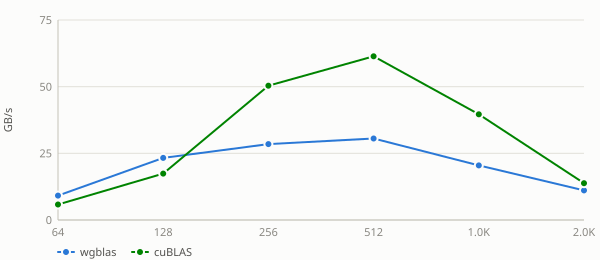
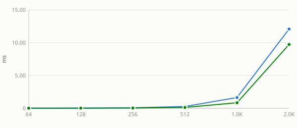
Nvidia Geforce Gtx 1650 — uplo = upper
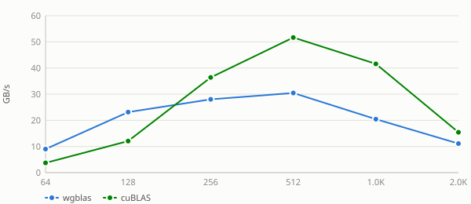
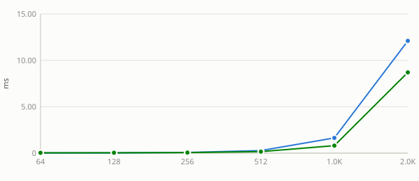
See also:
Lda sweep
Unless noted otherwise, every result above uses a tight
lda(no padding). Padding the row stride changes throughput here — the exact mechanism and shape of that effect is routine-specific — collapsed below by default, expand apadvalue to see its table and chart.Nvidia Geforce Gtx 1650 — pad = 0
Nvidia Geforce Gtx 1650 — pad = 1
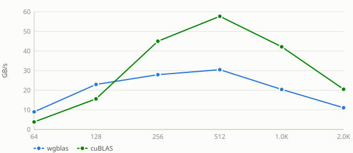
Nvidia Geforce Gtx 1650 — pad = 8
Nvidia Geforce Gtx 1650 — pad = 16
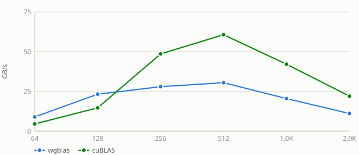
Nvidia Geforce Gtx 1650 — pad = 32
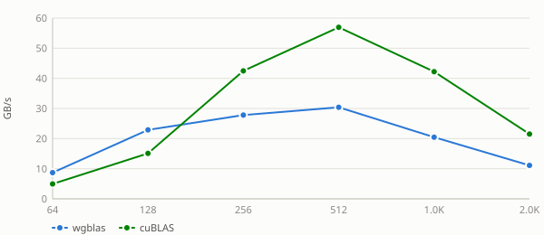
Nvidia Geforce Gtx 1650 — pad = 48
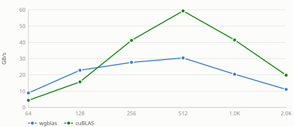
Nvidia Geforce Gtx 1650 — pad = 64
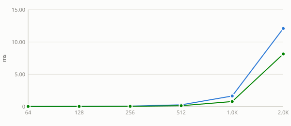
Nvidia Geforce Gtx 1650 — pad = 128
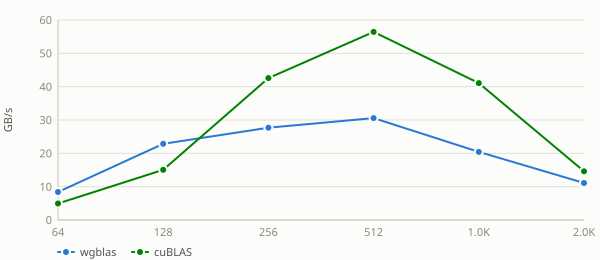
See also:
ldb sweep
Padding on
B, the operand the gemm kernels stream along their inner loop, so its stride is the one with most room to matter. Only for routines whose ldb sweep is a plain {pad, n} one —sgemm's is a combined transB x pad grid and has its own section.Nvidia Geforce Gtx 1650 — ldb = n + 0
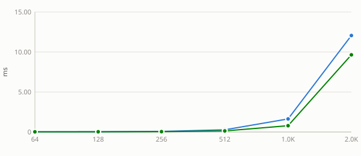
Nvidia Geforce Gtx 1650 — ldb = n + 1
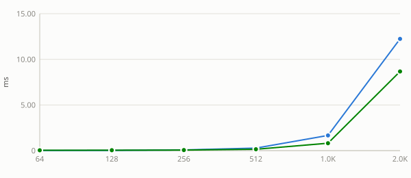
Nvidia Geforce Gtx 1650 — ldb = n + 8
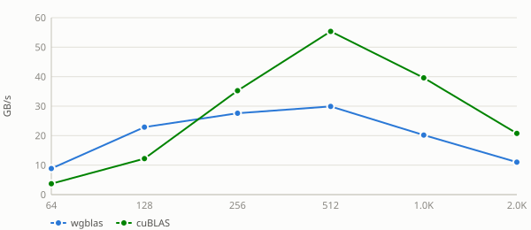
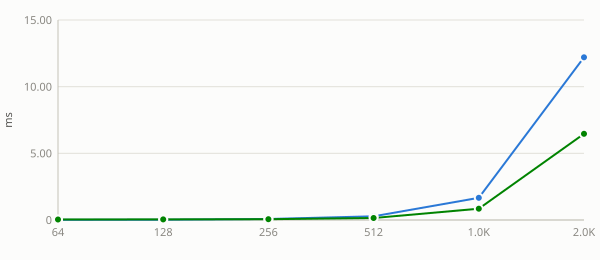
Nvidia Geforce Gtx 1650 — ldb = n + 16
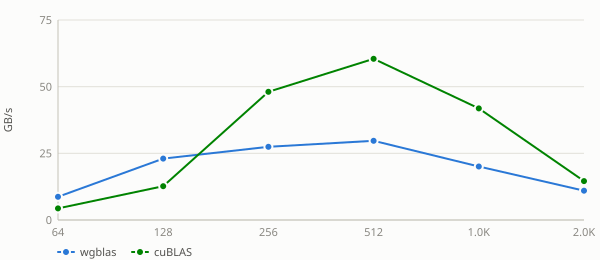
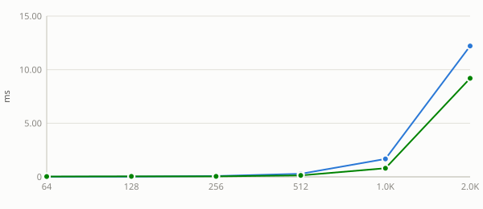
Nvidia Geforce Gtx 1650 — ldb = n + 32
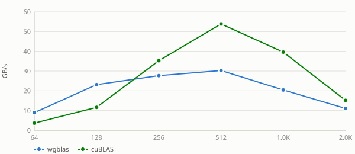
Nvidia Geforce Gtx 1650 — ldb = n + 48
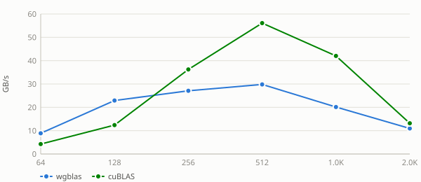
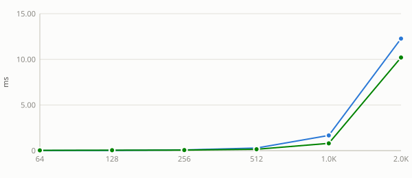
Nvidia Geforce Gtx 1650 — ldb = n + 64
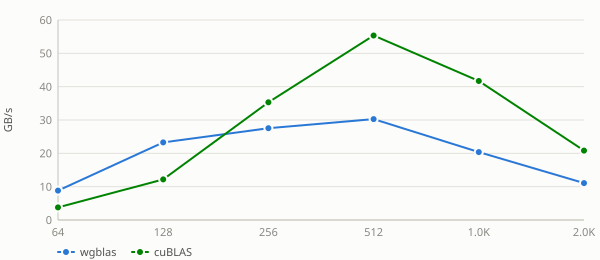
Nvidia Geforce Gtx 1650 — ldb = n + 128
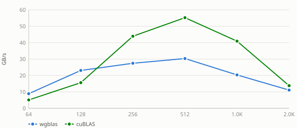
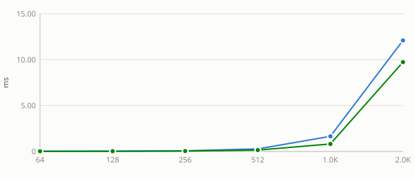
See also:
alpha sweep
alphais a plain multiplier here: the kernel applies it unconditionally, with no branch for any particular value. A flat sweep is therefore the expected result and is recorded as a measured null. Levels include0,1and a denormal-producing1e-38because those are the values a shader could special-case if it ever grew a branch — andstrsmis the routine where one does.Nvidia Geforce Gtx 1650 — alpha = -3.75
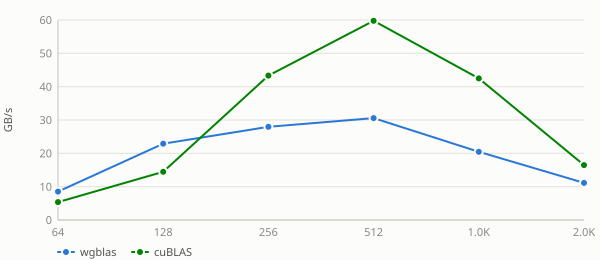
Nvidia Geforce Gtx 1650 — alpha = 0
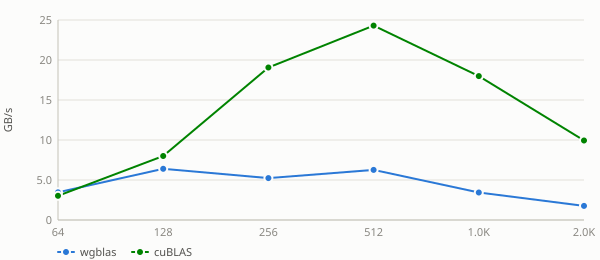
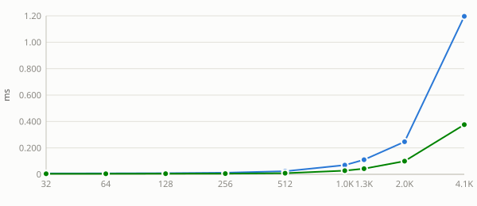
Nvidia Geforce Gtx 1650 — alpha = 1e-38
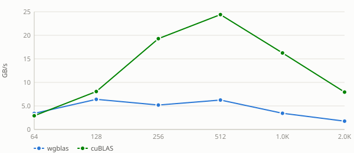
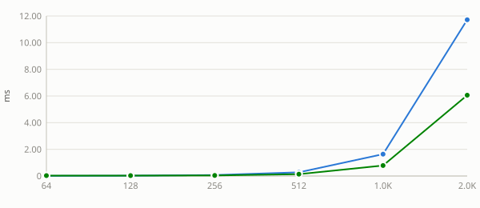
Nvidia Geforce Gtx 1650 — alpha = 1
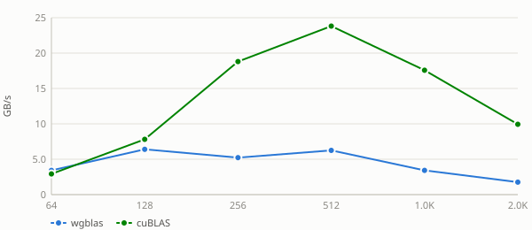
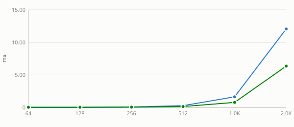
Nvidia Geforce Gtx 1650 — alpha = 2.5
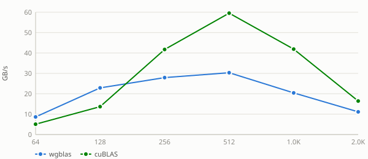
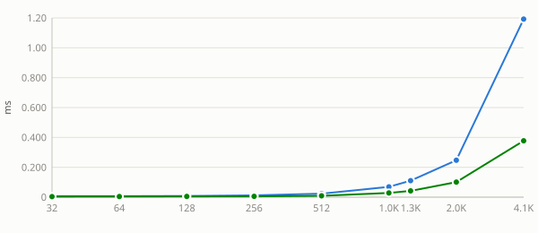
See also:
diag sweep
A unit diagonal lets the kernel skip the diagonal load — and for the triangular solve, the reciprocal as well — so any difference here is exactly that skipped work.
Nvidia Geforce Gtx 1650 — diag = non-unit
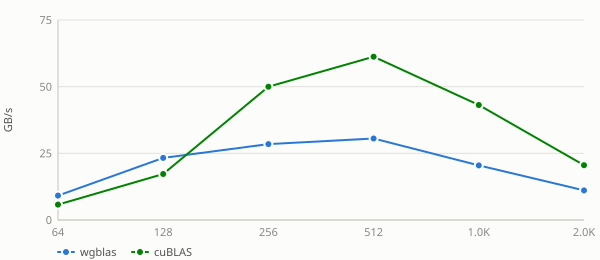
Nvidia Geforce Gtx 1650 — diag = unit
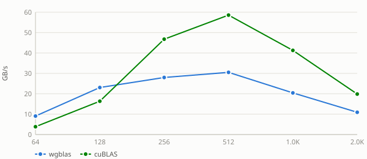
See also:
side sweep
Whether
Apre- or post-multipliesB. The two settings traverse the same data in different orders, so this is a scheduling and coalescing question rather than an arithmetic one — both do identical flops.Nvidia Geforce Gtx 1650 — side = left
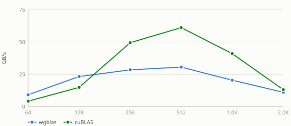
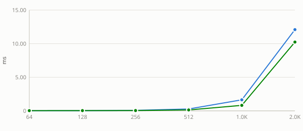
Nvidia Geforce Gtx 1650 — side = right
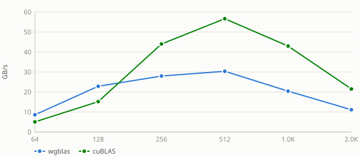
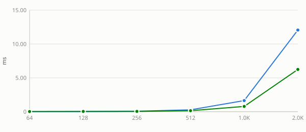
See also:
transA sweep
op(A)decides whether the kernel walksAalong rows or columns, which changes how its tile loads coalesce. Swept on its own here;sgemm's combined transA x transB grid lives in its trans sweep.Nvidia Geforce Gtx 1650 — transA = no-transpose
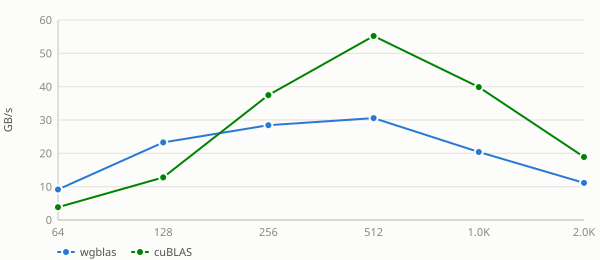
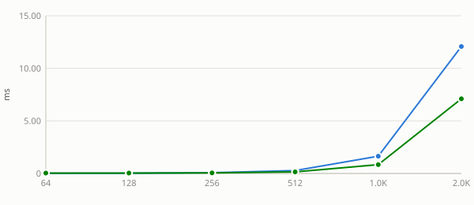
Nvidia Geforce Gtx 1650 — transA = transpose
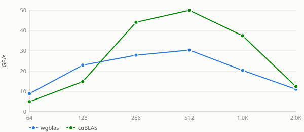
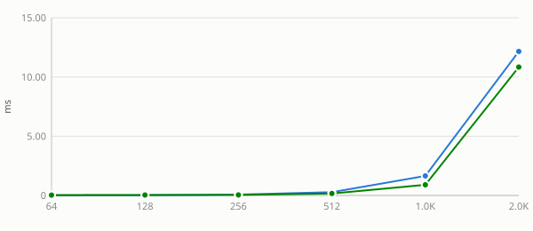
See also:
layout sweep
Column-major swaps the effective
m/nand flips the transpose flag internally, changing which axis is contiguous and therefore how the matrix reads coalesce. wgblas-only: cuBLAS is column-major and has no layout argument, so there is no reference curve to compare against.Nvidia Geforce Gtx 1650 — layout = column-major
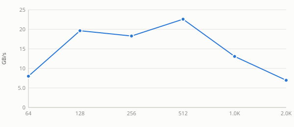
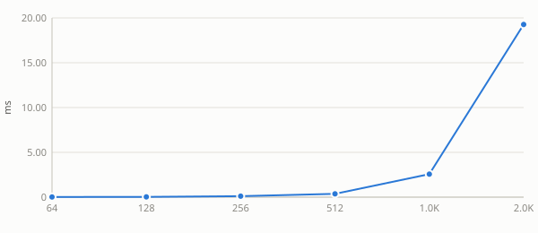
Nvidia Geforce Gtx 1650 — layout = row-major
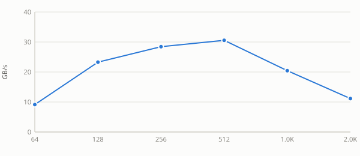
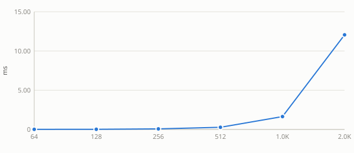
See also: